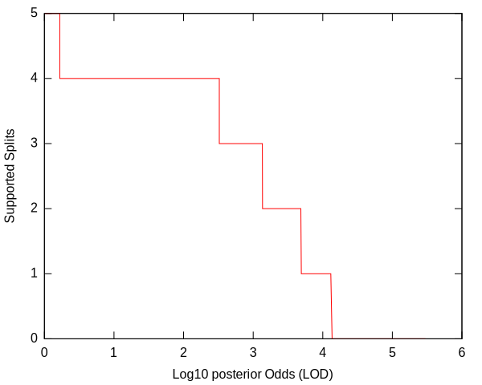
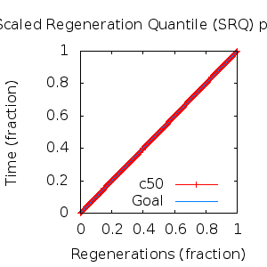
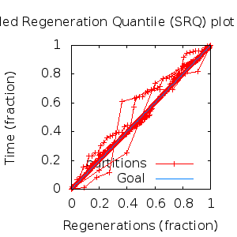

MCMC Post-hoc Analysis: 8 sequences
Data & Model
| Partition | Sequences | Lengths | Alphabet | Substitution Model | Indel Model | Scale Model |
|---|
| 1 |
E5_alpha1_alpha2_aa_reduced.fas |
72 - 84 |
Amino-Acids | S1 = lg08+f |
I1 = rs07 |
scale1 ~ gamma[0.5,2] |
Scalar variables
| Statistic | Median | 95% BCI | ACT | ESS | burnin | PSRF-CI80% | PSRF-RCF |
|---|
| prior |
-112.3 |
(-136.8, -90.9) |
28.07 |
9618 |
474
|
0.9999 | 0.9967
|
| prior_A1 |
-99.57 |
(-122.7, -82.89) |
7.561 |
35710 |
253
|
1 | 0.9974
|
| likelihood |
-1097 |
(-1114, -1083) |
10.24 |
26375 |
191
|
0.9999 | 0.9987
|
| posterior |
-1210 |
(-1232, -1192) |
28.93 |
9333 |
361
|
1.001 | 0.9966
|
| Heat.beta |
1 |
| | | | | |
| Scale[1] |
3.589 |
(1.66, 6.444) |
1.084 |
249106 |
133
|
0.9998 | 0.9988
|
| f:pi[A] |
0.05433 |
(0.03098, 0.08105) |
8.096 |
33348 |
293
|
0.9998 | 1.003
|
| f:pi[R] |
0.0265 |
(0.008591, 0.05038) |
8.546 |
31594 |
394
|
0.9999 | 1.001
|
| f:pi[N] |
0.02255 |
(0.007132, 0.04287) |
8.796 |
30694 |
293
|
0.9999 | 1
|
| f:pi[D] |
0.02148 |
(0.002851, 0.04898) |
11.98 |
22529 |
511
|
0.9994 | 1.005
|
| f:pi[C] |
0.05418 |
(0.0312, 0.08153) |
8.06 |
33499 |
350
|
1 | 1.002
|
| f:pi[Q] |
0.02716 |
(0.009524, 0.04957) |
8.596 |
31409 |
359
|
0.9999 | 0.9955
|
| f:pi[E] |
0.01445 |
(0.001745, 0.03424) |
8.993 |
30024 |
629
|
1 | 1
|
| f:pi[G] |
0.01896 |
(0.003853, 0.0407) |
8.647 |
31224 |
559
|
1 | 0.9996
|
| f:pi[H] |
0.03063 |
(0.01291, 0.05224) |
7.796 |
34632 |
583
|
1 | 0.9992
|
| f:pi[I] |
0.1044 |
(0.07761, 0.1342) |
9.396 |
28734 |
326
|
1 | 1.003
|
| f:pi[L] |
0.1643 |
(0.1269, 0.2058) |
7.516 |
35924 |
295
|
1 | 1.001
|
| f:pi[K] |
0.008192 |
(0.0002431, 0.02301) |
9.854 |
27400 |
545
|
0.9999 | 1.002
|
| f:pi[M] |
0.02405 |
(0.01179, 0.03885) |
7.987 |
33805 |
388
|
0.9999 | 1.004
|
| f:pi[F] |
0.07112 |
(0.0469, 0.09894) |
7.816 |
34546 |
442
|
1 | 0.9981
|
| f:pi[P] |
0.03303 |
(0.01104, 0.06105) |
8.655 |
31197 |
736
|
1 | 1.006
|
| f:pi[S] |
0.06837 |
(0.04179, 0.09944) |
7.949 |
33968 |
722
|
0.9997 | 0.9994
|
| f:pi[T] |
0.06644 |
(0.04094, 0.09441) |
7.76 |
34794 |
459
|
1 | 1.002
|
| f:pi[W] |
0.0167 |
(0.004443, 0.03389) |
8.696 |
31050 |
558
|
1 | 0.999
|
| f:pi[Y] |
0.0302 |
(0.01424, 0.0488) |
7.909 |
34137 |
399
|
0.9999 | 1.003
|
| f:pi[V] |
0.12 |
(0.08845, 0.1536) |
9.074 |
29756 |
273
|
1 | 1
|
| rs07:mean_length |
3.6 |
(1.901, 6.369) |
2.632 |
102576 |
231
|
0.9999 | 1.001
|
| rs07:log_rate |
-3.924 |
(-4.478, -3.347) |
2.17 |
124445 |
74
|
1 | 0.9991
|
| |A1| |
99 |
(95, 105) |
2.508 |
107656 |
96 |
0.8571 | 0.9998
|
| #indels1 |
13 |
(10, 16) |
7.506 |
35970 |
205 |
0.75 | 0.9989
|
| |indels1| |
37 |
(27, 49) |
3.088 |
87426 |
214 |
0.9767 | 0.9995
|
| #substs1 |
201 |
(194, 206) |
4.656 |
57991 |
110 |
0.875 | 1
|
| Scale1*|T| |
4.18 |
(3.447, 4.98) |
3.483 |
77519 |
202
|
0.9999 | 1.003
|
| |A| |
99 |
(95, 105) |
2.508 |
107656 |
96 |
0.8571 | 0.9998
|
| #indels |
13 |
(10, 16) |
7.506 |
35970 |
205 |
0.75 | 0.9989
|
| |indels| |
37 |
(27, 49) |
3.088 |
87426 |
214 |
0.9767 | 0.9995
|
| #substs |
201 |
(194, 206) |
4.656 |
57991 |
110 |
0.875 | 1
|
| |T| |
1.168 |
(0.5373, 2.001) |
1 |
269888 |
161
|
0.9998 | 0.9995
|
Phylogeny Distribution


Alignment Distribution
Partition 1
|
|
|
Diff |
|
Min. %identity |
# Sites |
Constant |
Informative |
| Initial |
FASTA |
HTML |
Diff |
|
6.41% |
84 |
1 (1.19%) |
63 (75%) |
| Best (WPD) |
FASTA |
HTML |
|
AU |
19.6% |
97 |
7 (7.22%) |
63 (64.9%) |
Mixing
Statistics: | scalar burnin | 736 | | scalar ESS | 9333 | | topological ESS | | | ASDSF | NA | | MSDSF | NA | | PSRF CI80% | 1.001 | | PSRF RCF | 1.006 |
|  |
Analysis
directory: /work/awillemsen/bali-phy/AlphaPVs_E5_aa_new_reduced
version: 3.3
| chain # | burnin | subsample | Iterations (after burnin) | command line | subdirectory |
|---|
| 1 |
10000 |
1 |
90000 |
bali-phy E5_alpha1_alpha2_aa_reduced.fas -s 24952 --smodel lg08 -i 100000 -n AlphaPVs_E5_red_alpha1_alpha2 |
AlphaPVs_E5_red_alpha1_alpha2-1 |
| 2 |
10000 |
1 |
90000 |
bali-phy E5_alpha1_alpha2_aa_reduced.fas -s 58471 --smodel lg08 -i 100000 -n AlphaPVs_E5_red_alpha1_alpha2 |
AlphaPVs_E5_red_alpha1_alpha2-2 |
| 3 |
10000 |
1 |
90000 |
bali-phy E5_alpha1_alpha2_aa_reduced.fas -s 62349 --smodel lg08 -i 100000 -n AlphaPVs_E5_red_alpha1_alpha2 |
AlphaPVs_E5_red_alpha1_alpha2-3 |
| P(data|M) = -1113.368 +- 0.169
|
Complete sample: 42
topologies |
95% Bayesian credible interval: 5 topologies |
Model and priors
Tree (+priors)
| topology | ~ uniform on tree topologies |
| branch lengths | ~ iid[num_branches[T],gamma[0.5,div[2,num_branches[T]]]] |
Substitution model (+priors)
| S1 | = |
lg08+f
| f:pi | ~ | dirichlet_on[letters[@a],1]
|
|
Indel model (+priors)
| I1 | = |
rs07
| rs07:log_rate | ~ | laplace[-4,0.707]
|
| rs07:mean_length | ~ | exponential[10,1]
|
|
Scales (+priors)
{kind=link}
{kind=link}
{kind=link}
{kind=link}
{kind=link}
{kind=link}
{kind=link}
{kind=link}